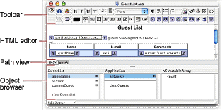
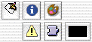
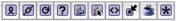
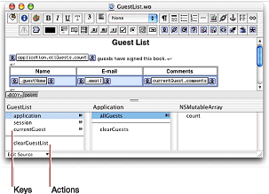

Component Window
WebObjects Builder displays your component in a component window. It contains four main parts:

- The Toolbar contains buttons you use to create
the content of your component. WebObjects Builder also has menu
commands corresponding to these buttons.
- The HTML Editor lets you create your component's appearance graphically.
- The Path View displays the element path to the selected element.
An element can be contained in a hierarchy of several levels of
elements, and it can in turn contain other elements. To select an
element, you can click on it in the path view.
- The Object Browser displays the keys and actions your component
uses.
Toolbar
To create HTML elements, you use the buttons in the toolbar.
There are four groups of buttons.
- Windows buttons display the Inspector, Color
palette, Warnings window, and Palettes window. Plus they let you
choose how to display your content in the Component window.

- Structure buttons create paragraphs, lists, images, and other static
HTML elements. See Standard HTML Elements.
![[image: art/StructuresToolBar1.gif]](art/StructuresToolBar1.gif)
- Form element buttons create elements in which users enter information.
Your application can access the data entered by associating, or
binding, these elements to keys and actions in your application.
See Form Elements.
![[image: art/FormToolBar.gif]](art/FormToolBar.gif)
- WebObjects buttons create other dynamic elements, which you can
bind to keys and actions in your program to control how they are
displayed. Some of these have direct HTML equivalents. Others are
abstract dynamic elements, such as repetitions and conditionals,
which determine how many times an element is displayed or whether
it is displayed at all. See WebObjects Elements.

HTML Editor
The HTML editor lets you view and edit your page in three
ways. To switch between them, use the
pop-up list at the left of
the toolbar.
- The layout view lets you edit your component
graphically. In this view your component is displayed in a way that's
close to, but not exactly, what it will look like in a browser.
- The preview view shows your component in a way that more close
approximates what it will look like in a browser. The elements are
collapsed as much as possible and bindings are not displayed. The
bottom pane contains the object browser.
- The source view shows your component's raw HTML. In this view,
you can enter any HTML code. You can include HTML elements that
are not directly supported by WebObjects Builder's layout tools.
You can also add elements using the toolbar buttons.
The HTML
code is color coded: errors are red, markers are purple, and so
on. To change these colors, choose Edit > Preferences and click
Syntax.
The bottom pane displays your declarations (Main.wod)
file. When you bind variables and methods to your dynamic elements, this
file stores the binding information. Normally, you don't edit
this file directly. Binding Elements shows how you use WebObjects
Builder to create bindings.
Object Browser
The Object Browser displays your application's variables
and methods. It lets you bind objects in your code to dynamic elements in
your component. The first column of the object browser displays two
types of objects:
- Keys are above the horizontal line. A key is
either an instance variable or a method that returns a value.
- Actions are below the line. An action is a method that takes
no parameters and returns a component (the next page to be displayed).
A ">" next to an object's name means it contains
keys and actions, which are displayed in the next column when you
select it.
In the figure, for example, the application object is selected, showing
that there are keys and actions defined in the application code.
One of these, allGuests,
is an array (indicated by the ">>"), and the array's
count method is displayed in the next column.

When you rest the mouse pointer on a key, WebObjects Builder displays
its type.
When you create a new component, the only keys that appear
in the object browser are application and session (unless you use
a Wizard to create a database application). These are methods that allow
you to access variables in your application and session code.